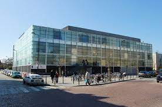

Biographie de Robert Escarpit
Robert Escarpit est un écrivain, sociologue et journaliste français. Originaire de notre belle région Girondine. Ce chercheur est né le 27 novembre 1918 à Saint-Macaire et mort le 19 novembre 2000 à Langon.
Il a consacré une grande partie de sa vie à l'étude des médias et de la communication.
Robert Escarpit a débuté sa carrière en tant que journaliste, il a notamment été billettiste pour Le Monde avec le billet d’humeur “Au jour, le jour”.

Il a par la suite été chroniqueur au Matin en 1983, puis à Sud Ouest Dimanche. En parallèle du journalisme, Robert Escarpit se tourne vers l'enseignement et la recherche en science de l’Information et de la communication. Il participe activement à « l'école de Bordeaux » une école de pensée où naissent progressivement des recherches sur la lecture, la création littéraire ou encore le livre. Il a publié de nombreux ouvrages sur le sujet, mais aussi sur les mécanismes de la presse, de la publicité et de la culture de masse. Son approche était souvent empreinte d'humour et de perspicacité critique.
Après avoir achevé ses études à l'École normale supérieure, il commence sa carrière en tant que professeur agrégé d'anglais et soutient sa thèse de doctorat dans ce domaine. Par la suite, il se tourne vers l'étude de la littérature comparée, qu'il enseigne à l'Université de Bordeaux à partir de 1952.
Au fil de ses recherches sur les œuvres littéraires et leurs auteurs, son intérêt se porte également sur les lecteurs. Il affirme qu'une compréhension approfondie de la lecture et de la réception du message écrit est indispensable pour mesurer les enjeux de l'écriture.
En 1963, il publie un article intitulé « L'acte littéraire est-il un acte de communication ? » dans la revue de l'université de Belgrade, Filoloski Pregled. Cet écrit fait suite à la publication en 1958 de son ouvrage “La sociologie de la littérature”, qui connaît une réédition et une traduction dans 23 langues.
En 1967, il assume la responsabilité de créer le premier IUT du secteur tertiaire à Bordeaux, dédié à l'apprentissage du journalisme et des Carrières sociales, incluant la formation Animations sociales et socioculturelles, qu'il supervise de 1970 à 1975. Nous lui devons donc la création de l’IUT Bordeaux Montaigne.
En 1972, en collaboration avec d'autres auteurs, chercheurs et universitaires, dont Jean Meyriat et Roland Barthes, il initie un groupe de pression visant à obtenir une reconnaissance universitaire pour les sciences de l’information et de la communication. Cette initiative conduit à la création d'un Comité des sciences de l'information et de la communication, ultérieurement rebaptisé Société française des sciences de l’information et de la communication (SFSIC), qui devient la principale société savante dans ce domaine. De 1975 à 1978, Robert Escarpit occupe la fonction de président de l’université de Bordeaux III et enseigne en tant que professeur en sciences de l’information et de la communication.
En 1976, il fait œuvre de pionnier, en jetant les bases des SIC dans la “Théorie générale des sciences de l’information et de la communication”. Il affirme la nécessité de rendre compte à la fois des phénomènes de l'information, donc de la documentation, et de ceux relevant plus généralement de la communication. La France est à peu près la seule à affirmer l'unité des sciences de l'information et de la communication. Robert Escarpit ne distingue pas information et communication : selon lui, les approches scientifiques sont diverses, ce qui explique le pluriel « sciences », mais leur objet est fondamentalement le même.
Au final, Robert Escarpit c’est une soixantaine d’ouvrages répartis entre travaux savants, essais journalistiques et œuvres littéraires. Chef de file de l'École de Bordeaux et pionnier de la théorie de la communication en France, billettiste du Monde pendant plus de trente ans et fervent militant de gauche, Robert Escarpit est un incontournable dans le champ intellectuel et littéraire français de la seconde moitié du xxe siècle.